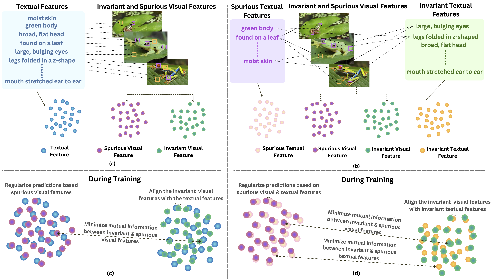
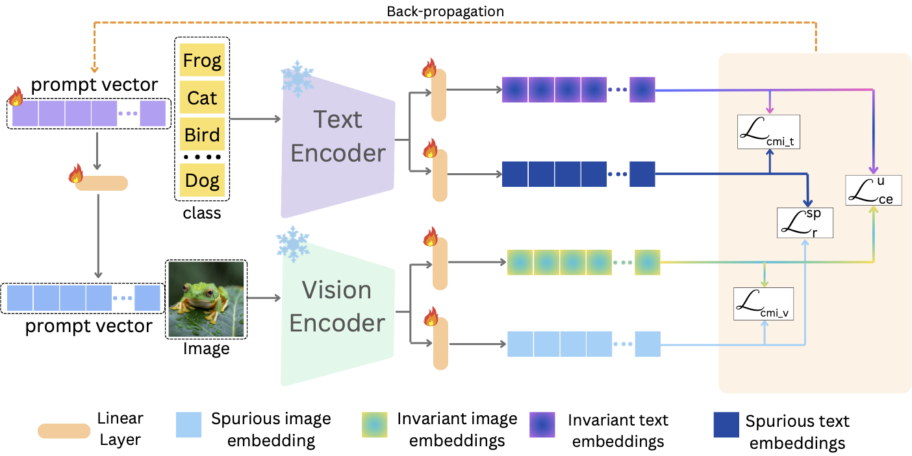
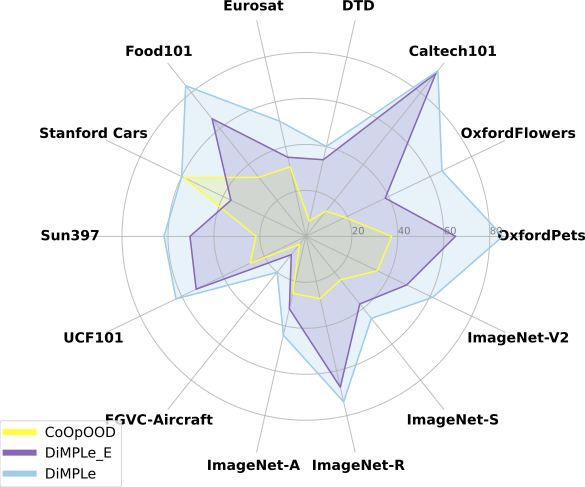
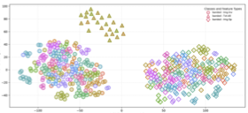
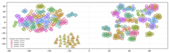

Figure 1: Illustration of ambiguous alignment in prior methods (top) and disentangled cross-modal mapping with DiMPLe (bottom).
Abstract
We introduce DiMPLe (Disentangled Multi-Modal Prompt Learning), a novel method for separating invariant and spurious features across both vision and language modalities. DiMPLe aligns class-relevant information while filtering spurious correlations by combining conditional mutual information minimization, spurious feature regularization, and contrastive learning on invariant representations. This structured disentanglement across modalities improves generalization to novel categories and robustness under distribution shifts.

Figure 2: Architecture of DiMPLe showing disentangled multi-modal prompting, conditional mutual information minimization, and contrastive alignment.
Key Insight
A crucial insight of DiMPLe is that spurious features in images often correspond to spurious components in textual prompts. Previous methods ignored this cross-modal alignment, leading to ambiguous supervision. DiMPLe explicitly aligns invariant features with invariant counterparts and similarly for spurious features, thereby enforcing coherent representations across modalities.

Figure 3: Radar plot comparing DiMPLe, DiMPLe-E, and CoOp-OOD across domain generalization and cross-dataset settings.

Figure 4a: t-SNE visualization for CoOp-OOD showing overlapping invariant and spurious features.

Figure 4b: t-SNE visualization for DiMPLe showing clean separation between invariant and spurious features across modalities.
Figure 4: Comparison of t-SNE plots between CoOp-OOD and DiMPLe. DiMPLe shows more distinct and coherent class-wise clusters.